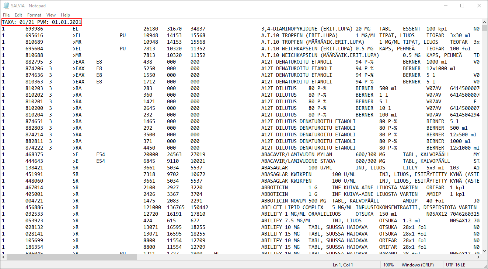

Importing data and statistical functions¶
Importing Excel data¶
Excel data is imported with the import excel command. The command is is then followed with the path or the webaddress to the data.
The options for the command are separated with ,. The most important options here are sheet, firstrow and cellrange which determine the sheet where the data is located, whether the variable names are located in the first row and the cell ranges for the data. Stata by default assumes that the data is located in the first sheet and looks for active cells in data.
In this example we download the Swedish pharmaceutical data directly to Stata with follwing command:
import excel using "https://www.tlv.se/file/medprice", firstrow clear // variable names in first row
Let’s see what the metadata tells us. Use the describe command:
describe _all
storage display value
variable name type format label variable label
---------------------------------------------------------------------------------------------------------------------------------------------------------------------------------------------------------------------------------------------------------------
Produktnamn str50 %50s Produktnamn
Varunummer str6 %9s Varunummer
ATCkod str16 %16s ATC-kod
NPLid str14 %14s NPL id
NPLpackid str14 %14s NPL pack-id
Form str86 %86s Form
Styrka str43 %43s Styrka
Förpackning str142 %142s Förpackning
Antal str9 %9s Antal
Företag str49 %49s Företag
AIP str9 %9s AIP
AUP str9 %9s AUP
AIPperst str9 %9s AIP per st
AUPperst str9 %9s AUP per st
Subventionerad str2 %9s Subventionerad
We can also look at the observations in memory wiht the list command:
list Produktnamn Företag AIP if _n < 11
+-----------------------------------------------------------------------------------+
| Produktnamn Företag AIP |
|-----------------------------------------------------------------------------------|
1. | Abacavir/Lamivudin Mylan Mylan AB 229,80 |
2. | Abacavir/Lamivudine Accord Accord Healthcare AB 1199,00 |
3. | Abacavir/Lamivudine Glenmark Glenmark Pharmaceuticals Nordic AB 1410,00 |
4. | Abacavir/Lamivudine Medical Valley Medical Valley Invest AB 1400,00 |
5. | Abacavir/Lamivudine Sandoz Sandoz A/S 190,18 |
|-----------------------------------------------------------------------------------|
6. | Abacavir/Lamivudine STADA STADA Nordic ApS 1199,00 |
7. | Abacavir/Lamivudine Teva Teva Sweden AB 172,13 |
8. | Abakavir/Lamivudin Ebb Ebb Medical AB 4232,00 |
9. | ABASAGLAR Orifarm AB 421,00 |
10. | ABASAGLAR Pharmachim AB 421,00 |
+-----------------------------------------------------------------------------------+
Above, we tell the list command to print the variables Produktnamn, Företag and AIP if the observation/row number is less than 21. That is, we ask Stata to print the first 20 values of these variables based on the current sort order. If you want to view the data “like in Excel”, you can type browse or br to the command line.
Having downloaded our data, we can save it on disk. But first, we may want to keep all of our data files within its own folder. We can tell Stata directly to make a new folder (directory) with the shell and mkdir commands. Shell is the common name for the command line of your operating system and mkdir is short for make directory. mkdir works both on Windows and Unix systems and would not even need the command shell before it.
The actual file save is done with the save command. It’s only argument is the path/name of the file relative to the working directory. The data files in Stata have the .dta file extension and we can include it also in the argument. Had we not done that, Stata would have understood it anycase. Finally, we include the replace option so that Stata can owerwrite if there already exists a file with the same and path. Here I use the same working directory from the previous materials.
Notice: the save is meant for only dta files. If we wanted to save the data in another format, we would neeed to use the export command(s).
cd "Z:/ECON-C4100" // change working directory
shell mkdir data // make a new directory for the data
save data/sweden_prices.dta, replace // save the data
Z:\ECON-C4100
file data/sweden_prices.dta saved
Now, having saved the data we can import some text delimited data! Let’s clear our memory first.
clear all
describe
Contains data
obs: 0
vars: 0
size: 0
Sorted by:
Importing text delimited data¶
Next, we will import the Finnish pharmaceutical data and modify it so it’s ready for your homework exercises. Before doing this yourself, do the following steps:
Make a new folder in your ECON-C4100 folder and name it
rawdataDownload the Finnish pharmaceutical data from MyCourses and place it to
ECON-C4100/rawdata.
The following Stata code does this for you if your working on Windows. Notice that you might need to change the paths for the copy commands. My Downloads folder is located under my user profile and my course working directory is located on disk Z.
For Unix (OSX or Linux) users, replace the copy with cp and the arguments to ~/Downloads/SALVIA.txt location_of_your_wdir. You can also create the folder and copy the file manually.
shell mkdir rawdata // make new directory
shell copy "%USERPROFILE%\Downloads\SALVIA.txt" "Z:/ECON-C4100/rawdata" // copy file to the new directory
Before importing the data, let’s take a look at it in Notepad.

The data clearly is “\t” or tab delimited. Notice also that there are no variable names! Don’t worry though, the data comes with a data description which tells us which columns are which. More on that later.
The cell in the data has a file identifier attached to it. For general good practice and debugging reasons, we want to keep that. We will next read the data into memory “as it is”. We do this with the import delimited command. The most important option is delimiters which tells Stata which delmiter the data is coded with.
import delimited using "rawdata/SALVIA.txt", delimiter(tab) varnames(nonames) encoding(UTF-16) stringcols(_all) clear
describe
(42 vars, 11,085 obs)
Contains data
obs: 11,085
vars: 42
size: 7,803,840
---------------------------------------------------------------------------------------------------------------------------------------------------------------------------------------------------------------------------------------------------------------
storage display value
variable name type format label variable label
---------------------------------------------------------------------------------------------------------------------------------------------------------------------------------------------------------------------------------------------------------------
v1 str29 %29s
v2 str7 %9s
v3 str1 %9s
v4 str5 %9s
v5 str3 %9s
v6 str2 %9s
v7 str9 %9s
v8 str9 %9s
v9 str9 %9s
v10 str2 %9s
v11 str1 %9s
v12 str43 %43s
v13 str39 %39s
v14 str64 %64s
v15 str7 %9s
v16 str16 %16s
v17 str67 %67s
v18 str8 %9s
v19 str13 %13s
v20 str1 %9s
v21 str7 %9s
v22 str1 %9s
v23 str7 %9s
v24 str1 %9s
v25 str3 %9s
v26 str1 %9s
v27 str84 %84s
v28 str85 %85s
v29 str7 %9s
v30 str9 %9s
v31 str6 %9s
v32 str3 %9s
v33 str10 %10s
v34 str1 %9s
v35 str3 %9s
v36 str7 %9s
v37 str99 %99s
v38 str7 %9s
v39 str10 %10s
v40 str10 %10s
v41 str1 %9s
v42 str7 %9s
---------------------------------------------------------------------------------------------------------------------------------------------------------------------------------------------------------------------------------------------------------------
Sorted by:
Note: Dataset has changed since last saved.
Let’s see what the first cell looks like:
list v1 if _n == 1
+-------------------------------+
| v1 |
|-------------------------------|
1. | TAXA: 01/21 PVM: 01.01.2021 |
+-------------------------------+
How could we save this value for every observation?
We do this by creating a new variable stamp with the generate command:
gen stamp = v1[1] // new variable that takes the first value of variable v1
describe stamp
tab stamp // list or tabulate all the unique values of stamp
storage display value
variable name type format label variable label
---------------------------------------------------------------------------------------------------------------------------------------------------------------------------------------------------------------------------------------------------------------
stamp str29 %29s
stamp | Freq. Percent Cum.
------------------------------+-----------------------------------
TAXA: 01/21 PVM: 01.01.2021 | 11,085 100.00 100.00
------------------------------+-----------------------------------
Total | 11,085 100.00
Notice that we can refer the Stata variable values with indexes starting from 1.
tabulate or tab is a great command to list all the different values of a variable. We can see that the identifier is now attached to every observation/row. We can count the number of observations in memory with the count command:
count
11,085
Recall that now the first row is useless for us. We can drop it with the drop command. It can be used either to drop observations or entire variables.
In this intro, we will next keep only variable number 2 and 12. Do this with either the keep or drop command:
drop if _n == 1
keep stamp v2 v12
list if _n < 11
(1 observation deleted)
+-----------------------------------------------------------------------------------+
| v2 v12 stamp |
|-----------------------------------------------------------------------------------|
1. | 693986 3,4-DIAMINOPYRIDINE (ERIT.LUPA) TAXA: 01/21 PVM: 01.01.2021 |
2. | 695616 A.T.10 TROPFEN (ERIT.LUPA) TAXA: 01/21 PVM: 01.01.2021 |
3. | 810689 A.T.10 TROPFEN (MÄÄRÄAIK.ERIT.LUPA) TAXA: 01/21 PVM: 01.01.2021 |
4. | 695604 A.T.10 WEICHKAPSELN (ERIT.LUPA) TAXA: 01/21 PVM: 01.01.2021 |
5. | 810688 A.T.10 WEICHKAPSELN (MÄÄRÄAIK.ERIT.LUPA) TAXA: 01/21 PVM: 01.01.2021 |
|-----------------------------------------------------------------------------------|
6. | 882795 A12T DENATUROITU ETANOLI TAXA: 01/21 PVM: 01.01.2021 |
7. | 874206 A12T DENATUROITU ETANOLI TAXA: 01/21 PVM: 01.01.2021 |
8. | 874636 A12T DENATUROITU ETANOLI TAXA: 01/21 PVM: 01.01.2021 |
9. | 810363 A12T DENATUROITU ETANOLI TAXA: 01/21 PVM: 01.01.2021 |
10. | 810203 A12T DILUTUS TAXA: 01/21 PVM: 01.01.2021 |
+-----------------------------------------------------------------------------------+
Variable v2 and variable v12 give the VNR (id) and the name of a pharmaceutical product. You can look their data descriptions from the pdf file found on MyCourses. Next we will rename them and give them new labels in English. We use the rename and label commands.
rename v2 vnr // VNR id
label variable vnr "VNR code"
rename v12 product_name // Product name
label variable product_name "Product name"
Let’s describe what we got and save the data.
describe _all
save data/finland_pharmaceuticals.dta, replace
storage display value
variable name type format label variable label
---------------------------------------------------------------------------------------------------------------------------------------------------------------------------------------------------------------------------------------------------------------
vnr str7 %9s VNR code
product_name str43 %43s Product name
stamp str29 %29s
file data/finland_pharmaceuticals.dta saved
In the exercises, you will get to rename all the rest of the variables yourself. Now let us get back to the Swedish data.
Basic statistical functions with Stata¶
Start by clearing the memory and then use the previously saved data:
clear all // Clear memory
use "data/sweden_prices.dta"
describe _all
storage display value
variable name type format label variable label
---------------------------------------------------------------------------------------------------------------------------------------------------------------------------------------------------------------------------------------------------------------
Produktnamn str50 %50s Produktnamn
Varunummer str6 %9s Varunummer
ATCkod str16 %16s ATC-kod
NPLid str14 %14s NPL id
NPLpackid str14 %14s NPL pack-id
Form str86 %86s Form
Styrka str43 %43s Styrka
Förpackning str142 %142s Förpackning
Antal str9 %9s Antal
Företag str49 %49s Företag
AIP str9 %9s AIP
AUP str9 %9s AUP
AIPperst str9 %9s AIP per st
AUPperst str9 %9s AUP per st
Subventionerad str2 %9s Subventionerad
Notice that all of our variables are in the string format. We want them to be numbers. Let’s destring the price variables. Because the numbers separated with commas and not dots, we use the dpcomma option.
destring AIP* AUP*, replace dpcomma // remember to use the replace command
AIP: all characters numeric; replaced as double
AIPperst: all characters numeric; replaced as double
AUP: all characters numeric; replaced as double
AUPperst: all characters numeric; replaced as double
Notice that Stata did not replace any values if the variable had nonnumeric characters.
Next, let’s tabulate some statistics for AIP or Apotek Inköp Pris and AUP or Apotek Utköp Pris:
tabstat AIP AUP, stats(mean sd p25 p50 p75 max min)
summarize AIP AUP
stats | AIP AUP
---------+--------------------
mean | 2833.3 2932.512
sd | 10842.34 10974.33
p25 | 100 155.69
p50 | 323.29 381.83
p75 | 1087.99 1157.31
max | 255000 256046.3
min | .98 31.7
------------------------------
Variable | Obs Mean Std. Dev. Min Max
-------------+---------------------------------------------------------
AIP | 13,953 2833.3 10842.34 .98 255000
AUP | 13,953 2932.512 10974.33 31.7 256046.3
We can also also calculate the confidence interval of the means or variance:
ci mean AIP
ci variances AIP
Variable | Obs Mean Std. Err. [95% Conf. Interval]
-------------+---------------------------------------------------------------
AIP | 13,953 2833.3 91.78867 2653.382 3013.218
Variable | Obs Variance [95% Conf. Interval]
-------------+----------------------------------------------------
AIP | 13,953 1.18e+08 1.15e+08 1.20e+08
Next we will make a light hearted test if for the mean prices of two different means.
We will sort the data by descending order and divide the data in two. Then we will test if the the two means are statistically significantly different.
scalar temp = _N/2
gsort -Produktnamn
gen dummy = _n > temp
tab dummy
tabstat AIP, by(dummy) stats(mean sd)
ttest AIP, by(dummy) unequal
dummy | Freq. Percent Cum.
------------+-----------------------------------
0 | 6,976 50.00 50.00
1 | 6,977 50.00 100.00
------------+-----------------------------------
Total | 13,953 100.00
Summary for variables: AIP
by categories of: dummy
dummy | mean sd
---------+--------------------
0 | 3502.136 13141.21
1 | 2164.56 7845.465
---------+--------------------
Total | 2833.3 10842.34
------------------------------
Two-sample t test with unequal variances
------------------------------------------------------------------------------
Group | Obs Mean Std. Err. Std. Dev. [95% Conf. Interval]
---------+--------------------------------------------------------------------
0 | 6,976 3502.136 157.3374 13141.21 3193.707 3810.565
1 | 6,977 2164.56 93.92568 7845.465 1980.438 2348.683
---------+--------------------------------------------------------------------
combined | 13,953 2833.3 91.78867 10842.34 2653.382 3013.218
---------+--------------------------------------------------------------------
diff | 1337.576 183.2406 978.3924 1696.759
------------------------------------------------------------------------------
diff = mean(0) - mean(1) t = 7.2996
Ho: diff = 0 Satterthwaite's degrees of freedom = 11386.4
Ha: diff < 0 Ha: diff != 0 Ha: diff > 0
Pr(T < t) = 1.0000 Pr(|T| > |t|) = 0.0000 Pr(T > t) = 0.0000
Next, we will conduct some string manipulation.
The variable ATCkod gives the ATC code of each pharmaceutical product. The ATC system issues a code for the active incredient of a pharmaceutical based on its therapeutic, pharmacological and chemical properties. You can read more about the ATC system on the WHO website. The first character of the code defines the anatomical main group of the pharmaceutical. To save this character, we will generate a new variable atc_1 with some string manipulation functions. Recall that the command to declare new variables in Stata is called the generate command:
list ATCkod if _n < 11
generate atc_1 = substr(ATCkod,1,1) // substr takes in 1. the name of the variable, 2. the start index, 3. the length of the string
tab atc_1
+------------------+
| ATCkod |
|------------------|
1. | D08AX |
2. | B05DB |
3. | B05DB |
4. | B05DB |
5. | B05DB |
|------------------|
6. | B05DB |
7. | B05DB |
8. | B05DB |
9. | B05DB |
10. | B05DB |
+------------------+
atc_1 | Freq. Percent Cum.
------------+-----------------------------------
A | 1,408 10.09 10.09
B | 956 6.85 16.94
C | 1,429 10.24 27.18
D | 412 2.95 30.14
G | 544 3.90 34.04
H | 400 2.87 36.90
J | 1,032 7.40 44.30
L | 1,754 12.57 56.87
M | 403 2.89 59.76
N | 4,408 31.59 91.35
P | 45 0.32 91.67
R | 691 4.95 96.62
S | 349 2.50 99.13
V | 122 0.87 100.00
------------+-----------------------------------
Total | 13,953 100.00
To identify the active incredients from the data using the ATC codes, we need to remove the redundant spaces from the variable ATC. To demonstrate, let’s consider the ATC code for simvastatin (a cholesterol medicine):
count if ATCkod == "C10AA01" // exact value
count if strpos(ATCkod, "C10AA01") > 0 // if ATCkod contains the string
0
56
Then replace:
replace ATCkod = strtrim(ATCkod)
count if ATCkod == "C10AA01" // exact value
(13,953 real changes made)
56
Basic graphs in Stata¶
In this part, we will plot a
Scatter plot
Histogram
Box plot
for the products whose active incredient is simvastatin.
set scheme s1mono // Setting the scheme or style of the graph
scatter AUP AIP if ATCkod == "C10AA01", title("Scatterplot of AIP and AUP")
hist AIP if ATCkod == "C10AA01", title("Histogram of AIP")
graph box AIP if ATCkod == "C10AA01", title("Box plot of AIP")
(bin=7, start=5.12, width=41.768571)
Save data for later use¶
save data/sweden_prices.dta, replace
file data/sweden_prices.dta saved